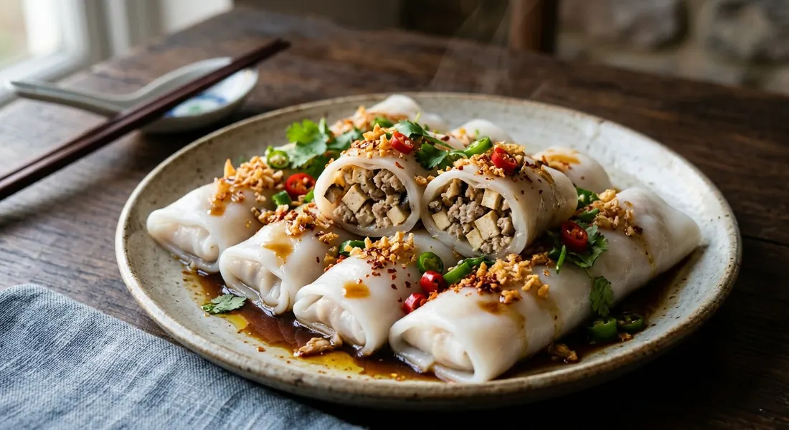

Fresh wide rice noodle sheets steamed and wrapped around a five-spice braise of pork belly, tofu, shiitake and dried shrimp — cut into rolls, scattered with fried garlic, and eaten with a sweet-sour dark dipping sauce.

ก๋วยเตี๋ยวหลอด takes its name from the shape: หลอด — the tube, the straw. A fresh, wide rice noodle sheet, the same เส้นใหญ่ that goes into pad see ew, but sold uncut and steamed rather than boiled, is rolled around its filling and eaten soft and warm. Thai noodle stalls sell the sheets fresh every morning, and every source here warns the same thing: the sheet must be fresh. A day-old sheet dries, cracks when folded, and tears when you roll it.
The classic filling is the ทรงเครื่อง — the "full dress". Pork, firm tofu, shiitake and dried shrimp, braised together until the pork is soft and the sauce has taken the colour of palm-sugar caramel. Phol Tantasathien's recipe is explicit about that colour: you caramelise the palm sugar until it darkens so the braise turns deep amber on its own — dark soy is a seasoning, not the colour.
Thai sources split the dish into three families, and all three call themselves the same name. Pim's braised version simmers pork belly a full hour and a half with five-spice. The wok version — Wongnai's, Aroifin's, Ajinomoto's — stir-fries minced pork with the same cast of tofu, shiitake and dried shrimp in twenty minutes. And Phol's bowl version never rolls anything: the same braised topping, quail eggs and all, is ladled over steamed sheets dressed with garlic oil, the way street carts in Bangkok serve it. The roll is one shape the dish takes; the sheets, the filling and the dark sauce are what make it the dish.
| Thai | English | Amount |
|---|---|---|
| เส้นก๋วยเตี๋ยวหลอด / เส้นใหญ่ | Fresh wide rice noodle sheets | 500–600 g |
| ถั่วงอก | Bean sprouts | 300 g |
| หมูสามชั้น | Pork belly, cut bite-size | 300 g |
| เห็ดหอมแห้ง | Dried shiitake, soaked | 30 g |
| เต้าหู้แข็ง | Firm tofu, cut small | 1 block |
| กุ้งแห้ง | Dried shrimp, soaked 30 min | 40 g |
| รากผักชี | Coriander roots, crushed | 5 |
| ผงพะโล้ | Five-spice powder | 2 tsp |
| พริกไทยป่น | Ground white pepper | 1½ tsp |
| ซีอิ๊วดำ | Dark soy sauce | 1 tsp |
| ซีอิ๊วขาว | Light soy sauce | 2 tbsp |
| เกลือป่น | Salt | 2 tsp |
| น้ำตาลปี๊บ | Palm sugar | 6 tbsp |
| น้ำซุปกระดูกหมู + น้ำแช่กุ้งแห้ง | Pork stock + shrimp soaking water | 5 cups |
The dipping sauce (all sources): sugar, vinegar, dark soy, light soy, salt and a little water, heated just until the sugar dissolves — Pim grinds bird chillies in (65 g sugar, 60 g vinegar, 30 g dark soy, 15 g light soy, 35 g water), Wongnai and Ajinomoto slice fresh red chillies into theirs, and Kapook swaps in a spoon of sesame oil. Serve with fried garlic, chopped spring onion and coriander; pork crackling if you have it.
The wok version (Wongnai): fry crushed garlic, coriander root and white pepper in oil; add 200 g minced pork, then shiitake, carrot, 50 g sweet radish (ไชโป๊ว), a block of fried tofu and 20 g dried shrimp; season with sugar, seasoning powder, light soy and oyster sauce; finish with bean sprouts and spring onion, roll into the sheets and steam. The bowl version (Phol): pork belly, quail eggs, shiitake and tofu braised in a litre of stock over a palm-sugar caramel; the steamed sheets are dressed with garlic oil and served in a bowl with dark soy and fried radish-garlic. From-scratch sheets (Kapook): 75 g rice flour, 50 g tapioca starch, 25 g potato starch and ½ tsp salt whisked with 400 ml warm water, steamed in a dim-sum steamer like khao kriap pak mor, wrapped around blanched prawns.
Braised or stir-fried? Pim and Phol braise — pork belly simmered an hour-plus in a five-spice caramel broth. Wongnai, Aroifin and Ajinomoto stir-fry minced pork with the same cast in a wok, twenty minutes start to finish. Same ingredients, two speeds; the braise gives you soft pork and a deep amber sauce, the wok gives you the filling the stalls cook in volume.
The protein. Pork belly (Pim, Phol), minced pork (Wongnai, Aroifin), pork plus shrimp (Ajinomoto), shrimp alone in a dim-sum style (Kapook's prawn version, which also swaps the bought sheets for batter steamed like khao kriap pak mor). Pork and tofu together are the common ground — that is what makes it ทรงเครื่อง.
Where the bean sprouts go. Rolled inside with the filling (Wongnai, Aroifin, Ajinomoto) or steamed separately and plated underneath the sheet (Pim, Phol). The first way eats crunchy; the second keeps the sprouts out of the braise and off the hot sheet until the last moment.
Steam time. Three to five minutes (Pim, Ajinomoto) against ten to fifteen (Aroifin). Everyone steams — no one boils — and everyone agrees the danger is over-steaming, which turns the sheets to mush.
The sauce. The same core everywhere — sugar, vinegar, dark soy, light soy, salt — but Kapook adds sesame oil to a prawn-version sauce, Aroifin simmers it to a syrup and pours it over the cut rolls, and Pim grinds chillies in only after the sauce has cooled. Wongnai and Ajinomoto put the chilli straight in the pot. Whether you dip or pour is a matter of cart habit, not recipe.
This recipe is translated from the following Thai-language sources. Where they disagree, we've said so.
1. Pim — "ก๋วยเตี๋ยวหลอดทรงเครื่อง" (the braised recipe used here) — pim.in.th
2. Wongnai — "สูตร ก๋วยเตี๋ยวหลอด" by ImAiw Wattanakorn (the wok-stirred filling) — wongnai.com
3. Phol Food Mafia — "ก๋วยเตี๋ยวหลอดทรงเครื่อง" by พล ตัณฑเสถียร (the unrolled bowl version) — pholfoodmafia.com
4. Aroifin — "วิธีทำ ก๋วยเตี๋ยวหลอด ทรงเครื่อง ไส้แน่นน้ำจิ้มเด็ด" by เชฟเจิน (the sellable version; crackling and egg strips) — aroifin.com
5. Kapook Cooking — "รวม 2 สูตรวิธีทำก๋วยเตี๋ยวหลอดกุ้ง" (from-scratch sheets; the Vietnamese rice-paper shortcut) — cooking.kapook.com
6. Ajinomoto TH — "สูตรก๋วยเตี๋ยวหลอดอร่อยเส้นนุ่ม" (the pork-and-shrimp filling; steam times) — recipe.ajinomoto.co.th